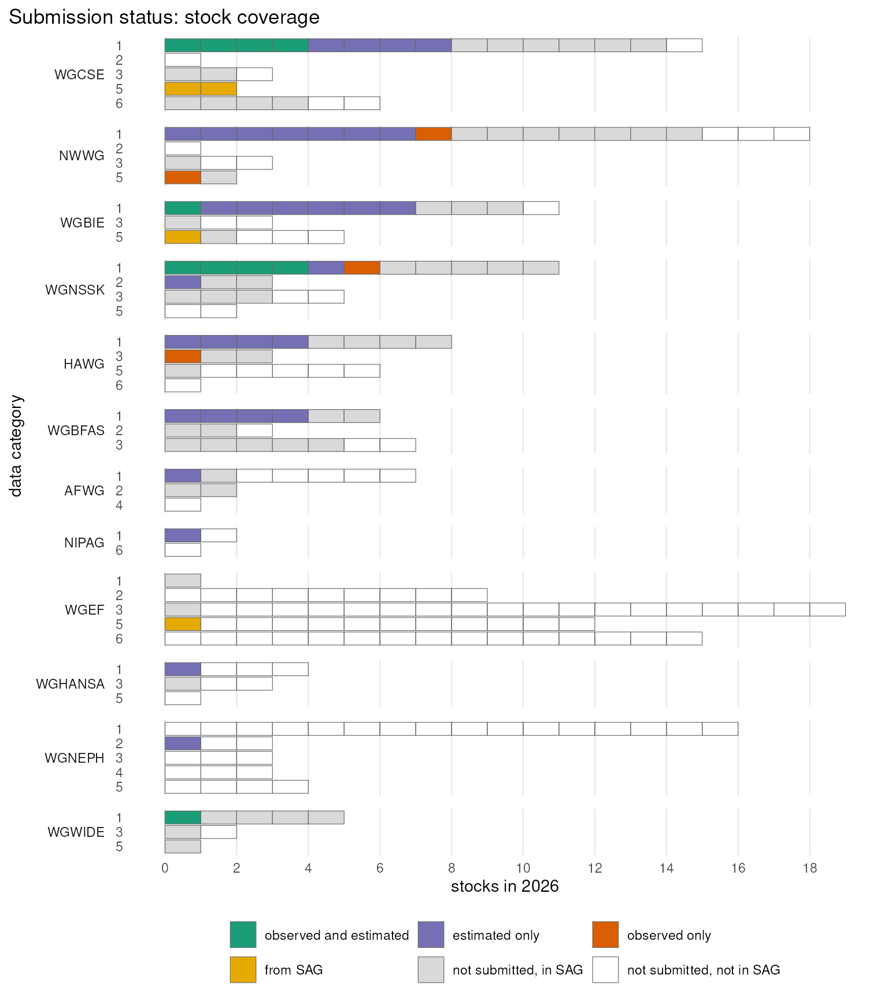
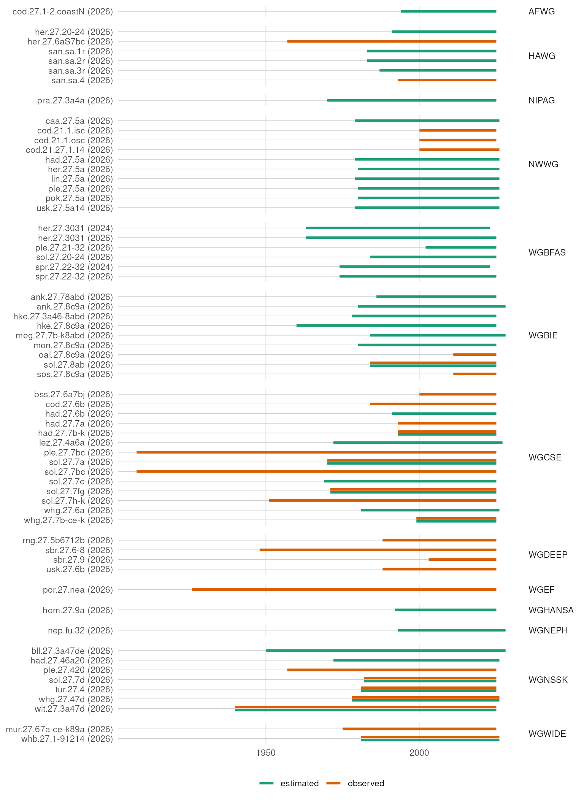
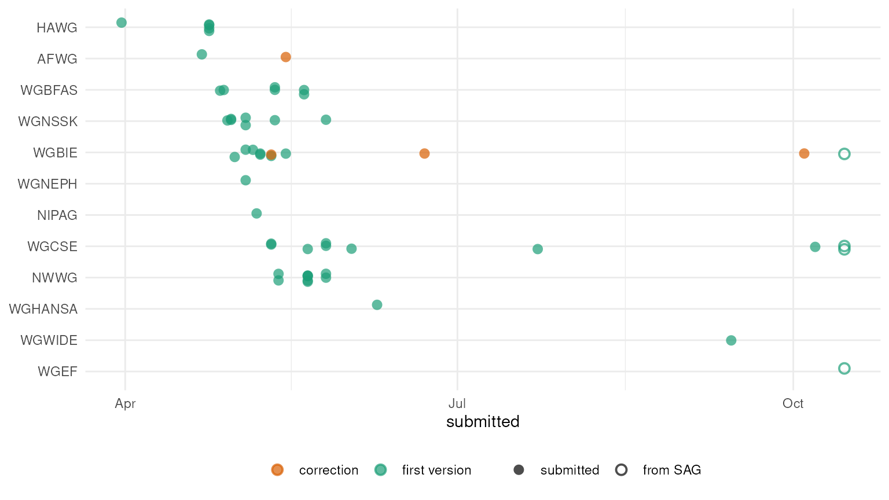

Stocks and years in the dataset
Source:vignettes/articles/stocks-by-expert-group.Rmd
stocks-by-expert-group.RmdThis article shows what has been submitted to the dataset: which stocks, which years they cover, and whether there are observed data, model estimates or both. Stocks with nothing submitted, such as those in data category 5, can instead have their catches, landings and discards taken from the ICES Stock Assessment Graphs database, SAG. The stocks are grouped by the ICES expert group that assesses them. The data category and species of each stock, and the other stocks of each expert group, are looked up in the ICES Stock Database with the icesSD package.
It is run against the live stock database each time this site is built.
Code
Expert groups
The dataset has the expert group of each stock assessment. The stock database lists the stocks that are active in a year, with the data category and species of each, and is matched to the latest version of each stock assessment in the dataset by stock code and assessment year.
Code
stocks <- stockpile_stocks()
stock_database <- lapply(unique(stocks$assessment_year), function(year) {
sd <- getSD(year = year)
data.frame(
stock_code = sd$StockKeyLabel,
assessment_year = year,
expert_group = sd$ExpertGroup,
data_category = sd$DataCategory,
species = sd$SpeciesCommonName
)
})
stock_database <- do.call(rbind, stock_database)
# the expert group of each stock assessment is in the dataset
stocks <- merge(stocks, stock_database[c("stock_code", "assessment_year", "data_category", "species")], all.x = TRUE)
# what the dataset has for each stock assessment, or that it is from SAG
stocks$contents <- ifelse(
stocks$origin == "SAG", "from SAG",
ifelse(
stocks$observed & stocks$estimated, "observed and estimated",
ifelse(stocks$estimated, "estimated only", "observed only")
)
)
stocks$contents <- factor(stocks$contents, c("observed and estimated", "estimated only", "observed only", "from SAG"))
# a label for each stock assessment
stocks$assessment <- paste0(stocks$stock_code, " (", stocks$assessment_year, ")")
contents_colours <- c(
"observed and estimated" = "#1b9e77", "estimated only" = "#7570b3", "observed only" = "#d95f02", "from SAG" = "#e6ab02"
)The dataset has 51 stock assessments, of 49 stocks, from 12 expert groups.
For the most recent assessment year, each expert group’s stocks in the stock database, by data category. Each stock is one box. The stocks that are in the dataset are coloured by what the dataset has for them, or that they were taken from SAG. Of the stocks that are not in the dataset, those with an assessment published in SAG are grey, and those with none are left empty: a stock can be listed in the stock database without an assessment in SAG.
Code
latest_year <- max(stocks$assessment_year)
active <- stock_database[stock_database$assessment_year == latest_year, ]
active$data_category <- floor(as.numeric(active$data_category))
# what the dataset has for each stock in the latest year, if anything
active <- merge(active, stocks[stocks$assessment_year == latest_year, c("stock_code", "contents")], all.x = TRUE)
active$in_dataset <- !is.na(active$contents)
# is there an assessment of the stock published in SAG?
active$in_sag <- active$stock_code %in% getListStocks(latest_year)$StockKeyLabel
active$status <- factor(
ifelse(
active$in_dataset, as.character(active$contents),
ifelse(active$in_sag, "not submitted, in SAG", "not submitted, not in SAG")
),
c(levels(stocks$contents), "not submitted, in SAG", "not submitted, not in SAG")
)
# only the expert groups with stocks in the dataset, most first
submitted <- tapply(active$in_dataset, active$expert_group, sum)
active <- active[active$expert_group %in% names(submitted)[submitted > 0], ]
active$expert_group <- factor(active$expert_group, names(sort(submitted[submitted > 0], decreasing = TRUE)))
# one box per stock, stacked in the order of the status
active <- active[order(active$status, active$stock_code), ]
active$stock_code <- factor(active$stock_code, unique(active$stock_code))Code
ggplot(active, aes(y = factor(data_category), fill = status, group = stock_code)) +
geom_bar(position = position_stack(reverse = TRUE), colour = "grey40", linewidth = 0.2) +
facet_grid(expert_group ~ ., scales = "free_y", space = "free_y", switch = "y") +
scale_x_continuous(breaks = function(limits) seq(0, limits[2], by = 2)) +
scale_y_discrete(limits = rev) +
scale_fill_manual(values = c(contents_colours, "not submitted, in SAG" = "grey85", "not submitted, not in SAG" = NA)) +
guides(fill = guide_legend(nrow = 2, byrow = TRUE)) +
labs(title = "Submission status: stock coverage", x = paste("stocks in", latest_year), y = "data category", fill = NULL) +
theme_minimal() +
theme(
legend.position = "bottom",
plot.title.position = "plot",
strip.placement = "outside",
strip.text.y.left = element_text(angle = 0, hjust = 1),
panel.grid.major.y = element_blank(),
panel.grid.minor.x = element_blank(),
panel.spacing = unit(0.6, "lines")
)
How much of each expert group’s work is in the dataset
The dataset holds age-based assessments, which are mostly the stocks in data category 1. As a table, the number of stocks each expert group has in the stock database in the most recent assessment year, the number of those in category 1, and the number that are in the dataset:
Code
active$category_1 <- active$data_category == 1
coverage <- aggregate(cbind(stocks = 1, category_1, in_dataset) ~ expert_group, active, sum, na.action = na.pass)
coverage <- coverage[coverage$in_dataset > 0, ]
coverage <- coverage[order(-coverage$in_dataset), ]
knitr::kable(
coverage,
row.names = FALSE,
col.names = c("Expert group", paste("Stocks in", latest_year), "In category 1", "In the dataset")
)| Expert group | Stocks in 2026 | In category 1 | In the dataset |
|---|---|---|---|
| WGCSE | 27 | 15 | 10 |
| NWWG | 24 | 18 | 9 |
| WGBIE | 19 | 11 | 8 |
| WGNSSK | 21 | 11 | 7 |
| HAWG | 18 | 8 | 5 |
| WGBFAS | 16 | 6 | 4 |
| AFWG | 10 | 7 | 1 |
| NIPAG | 3 | 2 | 1 |
| WGEF | 56 | 1 | 1 |
| WGHANSA | 8 | 4 | 1 |
| WGNEPH | 29 | 16 | 1 |
| WGWIDE | 8 | 5 | 1 |
Years
The years covered by the observed data and by the model estimates of each stock, from the ranges of the submitted objects. Where the estimates run past the assessment year, they include a forecast.
Code
sources <- stockpile_sources()
sources <- sources[sources$class == "FLStock", ]
sources <- merge(sources, stocks[c("stock_code", "assessment_year", "version", "expert_group", "assessment")])
# a guide line from each stock code to the start of its years
guides <- aggregate(min_year ~ assessment + expert_group, sources, min)
ggplot(sources, aes(y = assessment, colour = type)) +
geom_segment(
aes(x = -Inf, xend = min_year, yend = assessment),
data = guides, colour = "grey80", linewidth = 0.25
) +
geom_linerange(aes(xmin = min_year, xmax = max_year), linewidth = 1.2, position = position_dodge(width = 0.6)) +
facet_grid(expert_group ~ ., scales = "free_y", space = "free_y") +
scale_y_discrete(limits = rev) +
scale_colour_manual(values = c(observed = "#d95f02", estimated = "#1b9e77")) +
labs(x = NULL, y = NULL, colour = NULL) +
theme_minimal() +
theme(
legend.position = "bottom",
strip.text.y = element_text(angle = 0, hjust = 0),
panel.grid.major.y = element_blank(),
panel.grid.minor.x = element_blank(),
panel.spacing = unit(0.6, "lines")
)
The same as a table, with the ages and what else is known about each stock:
Code
ranges <- stocks[order(stocks$expert_group, stocks$stock_code, stocks$assessment_year), ]
ranges$years <- paste(ranges$min_year, ranges$max_year, sep = "–")
ranges$ages <- paste(ranges$min_age, ranges$max_age, sep = "–")
knitr::kable(
ranges[c("expert_group", "stock_code", "species", "assessment_year", "data_category", "years", "ages", "contents", "indices")],
row.names = FALSE,
col.names = c(
"Expert group", "Stock", "Species", "Assessment year", "Category", "Years", "Ages", "Contents", "Survey indices"
)
)| Expert group | Stock | Species | Assessment year | Category | Years | Ages | Contents | Survey indices |
|---|---|---|---|---|---|---|---|---|
| AFWG | cod.27.1-2.coastN | Cod | 2026 | 1 | 1994–2025 | 2–10 | estimated only | 0 |
| HAWG | her.27.20-24 | Herring | 2026 | 1 | 1991–2025 | 0–8 | estimated only | 0 |
| HAWG | her.27.6aS7bc | Herring | 2026 | 3 | 1957–2025 | 1–9 | observed only | 0 |
| HAWG | san.sa.1r | Sandeel | 2026 | 1 | 1983–2025 | 0–4 | estimated only | 0 |
| HAWG | san.sa.2r | Sandeel | 2026 | 1.2 | 1983–2025 | 0–4 | estimated only | 0 |
| HAWG | san.sa.3r | Sandeel | 2026 | 1 | 1987–2025 | 0–4 | estimated only | 0 |
| NIPAG | pra.27.3a4a | Northern shrimp | 2026 | 1 | 1970–2025 | 0–8 | estimated only | 0 |
| NWWG | caa.27.5a | Wolffish | 2026 | 1 | 1979–2026 | 4–16 | estimated only | 0 |
| NWWG | cod.21.1.isc | Cod | 2026 | 5 | 2000–2025 | 2–10 | observed only | 0 |
| NWWG | cod.21.1.osc | Cod | 2026 | 1 | 2000–2025 | 2–10 | observed only | 0 |
| NWWG | had.27.5a | Haddock | 2026 | 1 | 1979–2026 | 1–12 | estimated only | 0 |
| NWWG | her.27.5a | Herring | 2026 | 1 | 1980–2026 | 2–15 | estimated only | 0 |
| NWWG | lin.27.5a | Ling | 2026 | 1 | 1979–2026 | 2–12 | estimated only | 0 |
| NWWG | ple.27.5a | Plaice | 2026 | 1 | 1980–2026 | 3–12 | estimated only | 0 |
| NWWG | pok.27.5a | Saithe | 2026 | 1 | 1980–2026 | 3–14 | estimated only | 0 |
| NWWG | usk.27.5a14 | Tusk | 2026 | 1 | 1979–2026 | 1–10 | estimated only | 0 |
| WGBFAS | her.27.3031 | Herring | 2024 | 1 | 1963–2023 | 0–20 | estimated only | 0 |
| WGBFAS | her.27.3031 | Herring | 2026 | 1 | 1963–2025 | 0–20 | estimated only | 0 |
| WGBFAS | ple.27.21-32 | Plaice | 2026 | 1 | 2002–2025 | 1–7 | estimated only | 0 |
| WGBFAS | sol.27.20-24 | Sole | 2026 | 1 | 1984–2025 | 1–9 | estimated only | 0 |
| WGBFAS | spr.27.22-32 | Sprat | 2024 | 1 | 1974–2023 | 1–8 | estimated only | 0 |
| WGBFAS | spr.27.22-32 | Sprat | 2026 | 1 | 1974–2025 | 1–8 | estimated only | 0 |
| WGBIE | ank.27.78abd | Black-bellied anglerfish | 2026 | 1 | 1986–2025 | 0–15 | estimated only | 0 |
| WGBIE | ank.27.8c9a | Black-bellied anglerfish | 2026 | 1 | 1980–2028 | 0–30 | estimated only | 0 |
| WGBIE | hke.27.3a46-8abd | Hake | 2026 | 1 | 1978–2025 | 0–15 | estimated only | 0 |
| WGBIE | hke.27.8c9a | Hake | 2026 | 1 | 1960–2025 | 0–15 | estimated only | 0 |
| WGBIE | meg.27.7b-k8abd | Megrim | 2026 | 1 | 1984–2028 | 1–7 | estimated only | 0 |
| WGBIE | mon.27.8c9a | White anglerfish | 2026 | 1 | 1980–2025 | 0–30 | estimated only | 0 |
| WGBIE | oal.27.8c9a | Sole | 2026 | 5 | 2011–2025 | NA–NA | from SAG | 0 |
| WGBIE | sol.27.8ab | Sole | 2026 | 1 | 1984–2025 | 2–8 | observed and estimated | 0 |
| WGCSE | had.27.6b | Haddock | 2026 | 1 | 1991–2025 | 1–8 | estimated only | 0 |
| WGCSE | had.27.7a | Haddock | 2026 | 5 | 1993–2025 | NA–NA | from SAG | 0 |
| WGCSE | had.27.7b-k | Haddock | 2026 | 1 | 1993–2025 | 0–8 | observed and estimated | 0 |
| WGCSE | lez.27.4a6a | Megrim | 2026 | 1 | 1972–2027 | 1–1 | estimated only | 0 |
| WGCSE | sol.27.7a | Sole | 2026 | 1 | 1970–2025 | 1–10 | observed and estimated | 0 |
| WGCSE | sol.27.7e | Sole | 2026 | 1 | 1969–2025 | 2–12 | estimated only | 0 |
| WGCSE | sol.27.7fg | Sole | 2026 | 1 | 1971–2025 | 1–10 | observed and estimated | 0 |
| WGCSE | sol.27.7h-k | Sole | 2026 | 5 | 1951–2025 | NA–NA | from SAG | 0 |
| WGCSE | whg.27.6a | Whiting | 2026 | 1 | 1981–2026 | 0–7 | estimated only | 0 |
| WGCSE | whg.27.7b-ce-k | Whiting | 2026 | 1 | 1999–2025 | 0–7 | observed and estimated | 1 |
| WGEF | por.27.nea | Porbeagle | 2026 | 5 | 1926–2025 | NA–NA | from SAG | 0 |
| WGHANSA | hom.27.9a | Horse mackerel | 2026 | 1 | 1992–2025 | 0–11 | estimated only | 0 |
| WGNEPH | nep.fu.32 | Norway lobster | 2026 | 2 | 1993–2028 | 1–1 | estimated only | 0 |
| WGNSSK | bll.27.3a47de | Brill | 2026 | 2 | 1950–2028 | 1–1 | estimated only | 0 |
| WGNSSK | had.27.46a20 | Haddock | 2026 | 1 | 1972–2026 | 0–8 | estimated only | 0 |
| WGNSSK | ple.27.420 | Plaice | 2026 | 1 | 1957–2025 | 1–10 | observed only | 0 |
| WGNSSK | sol.27.7d | Sole | 2026 | 1 | 1982–2025 | 1–11 | observed and estimated | 0 |
| WGNSSK | tur.27.4 | Turbot | 2026 | 1 | 1981–2025 | 1–8 | observed and estimated | 0 |
| WGNSSK | whg.27.47d | Whiting | 2026 | 1 | 1978–2026 | 0–8 | observed and estimated | 0 |
| WGNSSK | wit.27.3a47d | Witch | 2026 | 1 | 1940–2025 | 1–10 | observed and estimated | 0 |
| WGWIDE | whb.27.1-91214 | Blue whiting | 2026 | 1 | 1981–2026 | 1–10 | observed and estimated | 0 |
Submissions
When each version of a stock assessment was submitted, or for a stock taken from SAG, when its data were got from SAG (hollow circles). A stock with more than one version has been corrected since it was first submitted.
Code
versions <- stockpile_stocks(version = "all")
versions <- merge(versions, unique(stocks[c("stock_code", "assessment_year", "expert_group")]))
versions$submission <- ifelse(versions$version == 1, "first version", "correction")
versions$origin <- factor(versions$origin, c("submission", "SAG"))
ggplot(versions, aes(as.Date(submitted), reorder(expert_group, as.numeric(submitted), min), colour = submission, shape = origin)) +
geom_point(size = 2.5, alpha = 0.7, stroke = 1, position = position_jitter(width = 0, height = 0.15, seed = 1)) +
scale_y_discrete(limits = rev) +
scale_colour_manual(values = c("first version" = "#1b9e77", "correction" = "#d95f02")) +
scale_shape_manual(values = c(submission = 16, SAG = 1), labels = c(submission = "submitted", SAG = "from SAG"), drop = FALSE) +
labs(x = "submitted", y = NULL, colour = NULL, shape = NULL) +
theme_minimal() +
theme(legend.position = "bottom")
The stock assessments with more than one version:
Code
corrected <- versions[ave(versions$version, versions$stock_code, versions$assessment_year, FUN = max) > 1, ]
corrected <- corrected[order(corrected$stock_code, corrected$version), ]
corrected$submitted <- format(corrected$submitted, "%Y-%m-%d")
knitr::kable(
corrected[c("expert_group", "stock_code", "assessment_year", "version", "submitted", "latest")],
row.names = FALSE,
col.names = c("Expert group", "Stock", "Assessment year", "Version", "Submitted", "Latest")
)| Expert group | Stock | Assessment year | Version | Submitted | Latest |
|---|---|---|---|---|---|
| AFWG | cod.27.1-2.coastN | 2026 | 1 | 2026-04-22 | FALSE |
| AFWG | cod.27.1-2.coastN | 2026 | 2 | 2026-05-15 | TRUE |
| WGBIE | meg.27.7b-k8abd | 2026 | 1 | 2026-05-11 | FALSE |
| WGBIE | meg.27.7b-k8abd | 2026 | 2 | 2026-05-11 | FALSE |
| WGBIE | meg.27.7b-k8abd | 2026 | 3 | 2026-10-04 | TRUE |
| WGBIE | mon.27.8c9a | 2026 | 1 | 2026-05-01 | FALSE |
| WGBIE | mon.27.8c9a | 2026 | 2 | 2026-06-22 | TRUE |